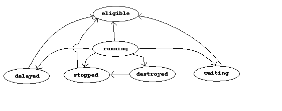
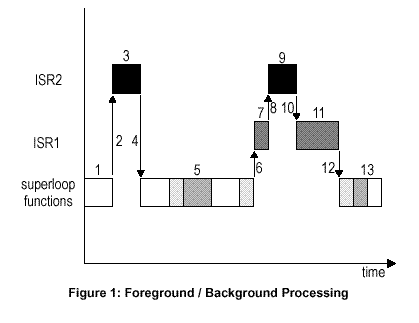

| Date: | April 20 |
| Lecture: | 24 |
| Theme: | RTOS |
| Source |
Chapter 2
|
Real Time Operating System
Superloop programming - Grocery list of things to do.
Multitasking -- What events are happening and what do I need to do about them?
First a really large list of terms
- Task -- A sequence of instructions. A small program.
- Task Priority -- The relative importance of the task
relative to all the other tasks. It may be static
or dynamic.
- Interrupt -- An internal or external event that
causes program execution to be suspended and a user
defined Interrupt Service Routine to be run.
- Task Switch -- When one task is suspended to run another.
Sometimes called a context switch.
- Preemption -- When a task is interrupted by another
- Kernel -- A software system which manages the switching
of tasks and intertask communication. Generally ensures
that the highest priority tasks is running.
- Delay -- The amount of time that a progcess is
suspended. When a process is suspended it should
consume little or none of the CPUs resources.
- Event -- An occurrence which a task can wait for,
examples include
- An interrupt
- An error
- A timer timing out
- Periodic interrupt
- A resource being freed
- An I/O pin changing state
- A keypress
- RS-232 Tx or Rx
- message being passed
- Intertask communication -- an orderly means
of passing information between tasks. Types of
interrtask communiaction:
- Semaphores
- messages
- message queues
- event flags
- Timeout -- The max amount of time that a task
will wait for an event. This is an optional
characteristic, a task can wait forever.
- Task State -- Describe what the task is currently doing
- Eligible -- waiting to be run on the CPU (not highest
priority)
- Running -- On the CPU
- Delayed -- Waiting for a delay timer
- Stopped -- Suspended indefinitely
- Destroyed -- Dead
- Waiting -- Waiting for an event

- Timer -- Keeps track of the real time.
The mode of programming which we have employed thus far in the course
is referred to as Superloop , calling subroutines in an ordered
sequence. To illustrate...

All the subroutines have the same level of priority. The response of a
subroutine to information made available in an ISR is limited by the amount
of time required for the superloop to get to that code. The functions
in main are executed in a strictly serial manner. Loop timing is effected by
the execution of the subroutines and the interrupts that occur. There
is also the problem of non-reentrant functions. For example,
imaging that you have the following printfs in main and inside a ISR.
void main() {
...
printf("This is main\n");
...
}
void ISR() {
...
printf("in an ISR");
...
} // end ISR
The problem occurs if main is interrupts by the ISR while its in
the middle of printing out the "This is main" message. The results
can be somewhat baffeling oat worst or just misleading at least.
What we need is a way to handle mutually exclusive resources.
The solutions to
this problem is to break the superloop into a set of independent tasks
and have all of the tasks running at the same time, multitask.
Clearly, all of the tasks will not be running at the same time because
we have only a single processor (the HC11). However the kernel will
switch the running task in a process known as a context switch.
Clearly, in order for multitasking to work the context switch must be
transparent, not visible. In order for the context switch to be transparent
the entire state of the process must be stored (on a stack). This
manipulation of the stack is handled by the kernel. Therefore, the kernel
executes between every context switch. Thus, the overhead of a context
switch is the cost of running the kernel, storing a tasks context on the
task and restoring a tasks context off the stack. Clearly, the kernel
need to be frugal with its context switching.
If all the tasks in a multitasking environment were all waiting
to have the CPU then the resulting system would be not better
than our superloop setup. Make the multitasking system event driven
allows the CPU to focus on those tasks which really require CPU
cycles.
However, there will still be cases when our "independent"
tasks are in actuality dependent on one another. Consider two tasks
which both require access to a LCD. Clearly, some arbitration mechanism
is needed. We will consider a semaphore, a variable (flag) used to
communicate the presence or absence of an event. Two actions can be
performed to a semaphore, posting and receiving.
- Posting (P) involves setting the semaphore to 1. Generally
P is associated with claiming a resource.
- Receiving (V) involves clearing the semaphore to 0.
Generally V is associated with freeing a resource.
Generally, tasks wait on semaphore especially when they correspond
to some physical resource. This introduces the problem of
deadlock two or more tasks waiting for semaphore(s) held by another
task. There are some conditions that you should avoid in order to
guarantee not encountering deadlock, but you will study this in OS.